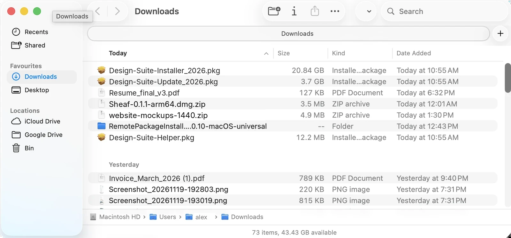
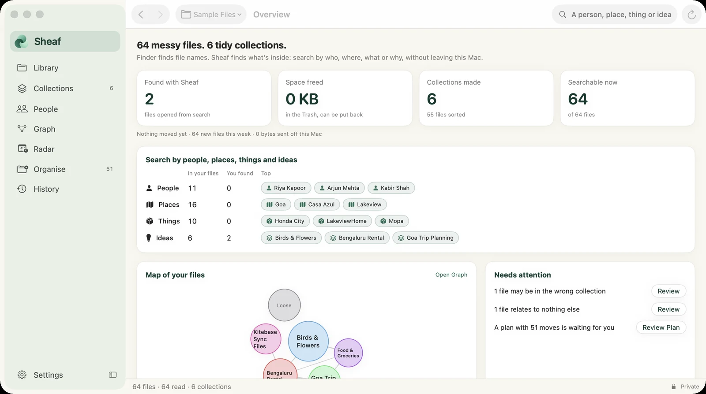
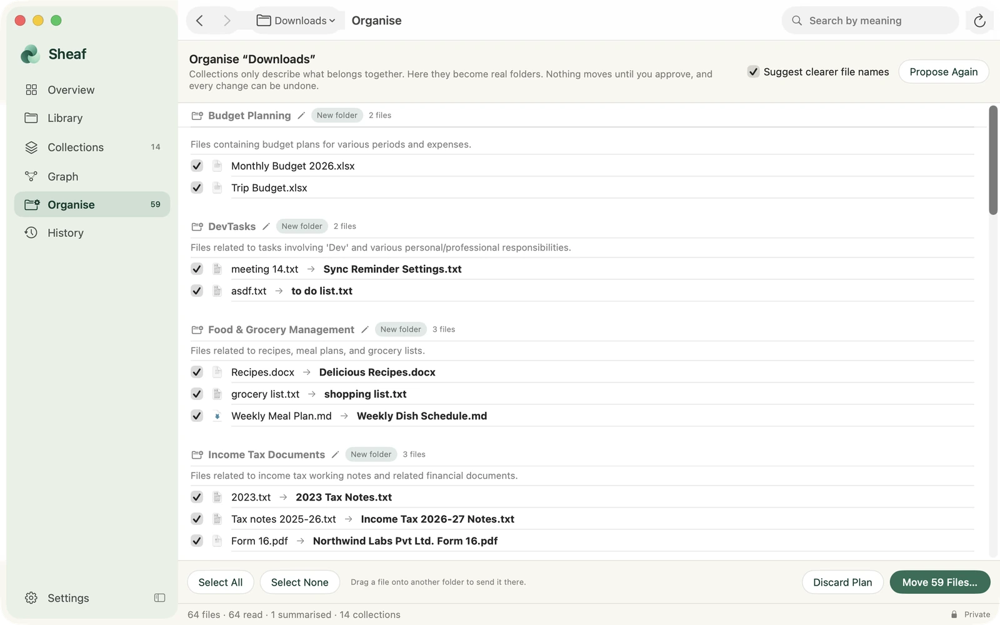
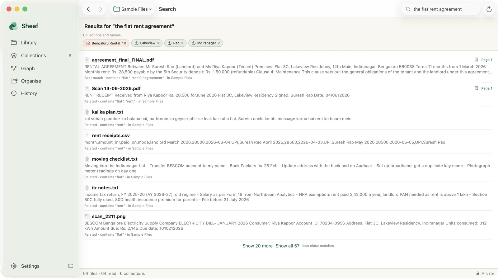
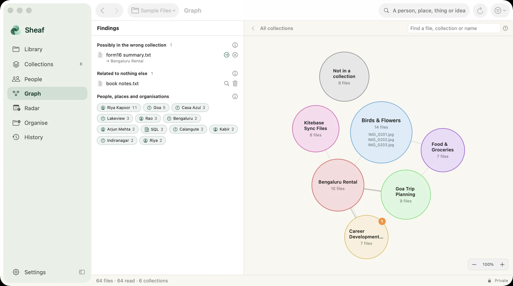

Sheaf is free to use with no charge, no subscription and no account. It runs on the Mac you already own and reads your files with AI that runs there too. You review every move and can undo all of it.

Screenshots of the beta running on a sample folder of invented files, with local models on a MacBook Air M2.
Counts, file types and the largest collections at a glance, with a map of how the collections relate.

Related files are grouped and named by the local model. Open a collection to see why its files belong together.

Each collection becomes a real folder, shown whole with every file and its clearer name. Every move has a checkbox. Nothing happens until you approve, and History puts everything back.

Natural-language search that shows the reason for each match, including near misses.

Explore the relationships Sheaf found. They are stored in a local database, separate from where files sit on disk.

Each tool below is good at something different. This is where Sheaf fits, based on public information checked on 20 November 2026.
| Sheaf | Finder | Hazel | Sparkle | DEVONthink | |
|---|---|---|---|---|---|
| Price | Free | Included with macOS | Paid licence, free trial | Subscription after a free trial | From $99, one-time |
| How it sorts | Groups files by what is inside them and proposes folders | You search, tag or set Smart Folder criteria | Rules you write | AI builds folders from file names | Learns from how you filed similar documents |
| Reads file contents | Yes, on your Mac | Search only | Only if your rules match on contents | Per its published notes, file names only | Yes, inside its own databases |
| Where the AI runs | Local models on your Mac | No AI sorting | No AI, rule-based | Cloud service | Optional: online providers or local models |
| Your files | You approve a plan first, and can undo it | Smart Folders show matches without moving files | Acts automatically when a rule matches | Organises into folders it manages | Works from its own databases |
Pick another tool when you want precise, ongoing rules (Hazel), a research library with annotation and sync (DEVONthink), or a hands-off cloud assistant (Sparkle). Pick Sheaf when you have a messy folder to sort once, you want the grouping decided by what the files say, and you want AI that stays on your Mac with a plan you approve.
Details of other products change, so check each vendor. Sources: Apple Support, MacStories on Hazel, Every on Sparkle, DEVONthink listing, TidBITS on DEVONthink 4. Product names belong to their owners.
Many AI tools charge a subscription and process your files on their servers. Sheaf needs neither.
No subscription, usage fees, ads or account. Core features will not move behind a paywall.
It runs on the Apple Silicon Mac you already have, with local models.
Nothing is required. A GitHub star, an honest bug report or a note on what grouped badly is how early users help most.
There are no rules to write and no categories to choose. Sheaf works out the structure from what the files say.
Sheaf scans it read-only. Nothing in it is changed, moved or uploaded.
Small local models read text, PDFs, Word documents and text inside images, link files with similar meaning, and name each collection.
Sheaf proposes folders and clearer file names with a reason for each move. Untick what you disagree with, apply the rest, undo with one click.
Sheaf runs on open models you can swap. Seven model combinations were run end to end on the same 20-file sample folder, then checked against hand labels.
reasoning and embedding models benchmarked, in 7 combinations
plain-language searches returned the right file first, and all 41 had it in the top three
median search over a library of 10,000 files, 14,000 text chunks
grouping F1 for all seven combinations, 0.833 to 0.837 (1.0 is a perfect match)
Reasoning models
granite3.3:2bllama3.2:3bphi3.5phi4-miniqwen3.5:4bEmbedding models
embeddinggemmanomic-embed-textqwen3-embedding:0.6bHardware so far: one Mac, a MacBook Air M2 with 8 GB, on macOS 26.4. Sheaf has not been run on other Macs or macOS versions yet, and the folders were small English-language samples. If you try it on another Mac, tell us how it went. Full results and caveats are on the benchmarks page.
Designed to run on an 8 GB MacBook Air, not a workstation.
Sheaf works on real folders and is still being built. This is where it stands.
Issues on GitHub decide what gets fixed next. A rough description is fine.
Sheaf itself is small. The models are the part that needs space.
| Mac | Apple Silicon. Developed and tested on a MacBook Air M2 with 8 GB of memory. |
|---|---|
| macOS | 14 Sonoma or later. |
| Model runner | Ollama, free and open source, running on your Mac. |
| Embedding model | embeddinggemma, 621 MB (nomic-embed-text works too). |
| Reasoning model | One small model, about 1.5 GB: granite3.3:2b by default (Apache 2.0). llama3.2:3b, phi3.5 and others also work. |
| Disk | About 2 GB for models. Sheaf stores its index in a small local database. |
| Speed | 6 to 22 seconds per short document for first-time reading on an M2 Air, depending on system load. Later runs only read what changed. |
Direct download from GitHub Releases. Sheaf is not on the Mac App Store.
# 1. Download the DMG and its checksum from the Releases page, then verify:
shasum -a 256 -c Sheaf-<version>-arm64.dmg.sha256
# 2. Install Ollama (the free runner for the local models):
brew install ollama # or download it from ollama.com/download
# 3. Open Sheaf. Setup starts Ollama if needed and downloads
# the two models (about 2 GB, once) with one click.First launch: beta releases are not signed with an Apple Developer ID and are not notarised, so macOS blocks the first launch. Open System Settings › Privacy & Security and choose “Open Anyway” for Sheaf.
The source is private while the beta settles. When the Sheaf repository on GitHub reaches 100 stars, the source goes public. Until then, the privacy page lists what you can check yourself.